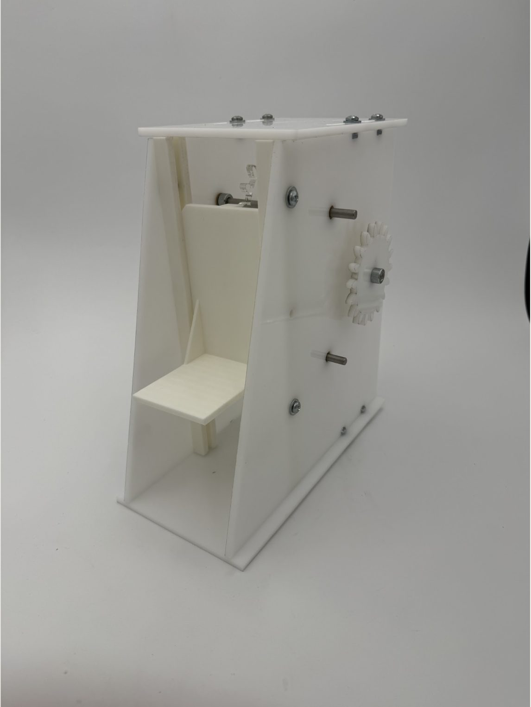
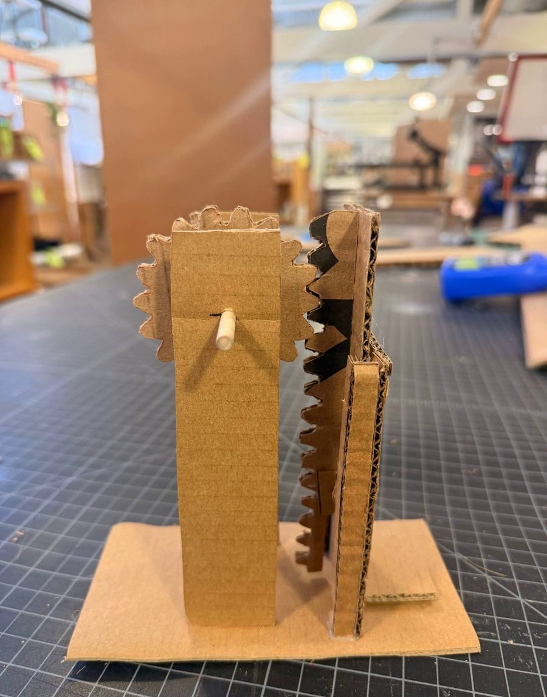
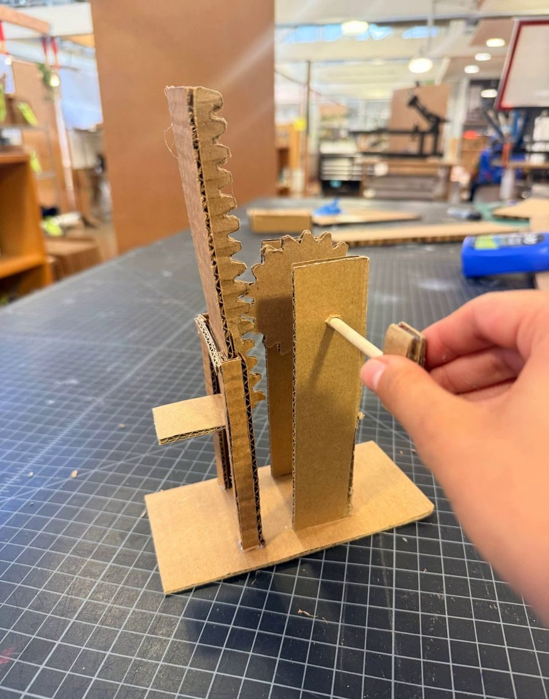
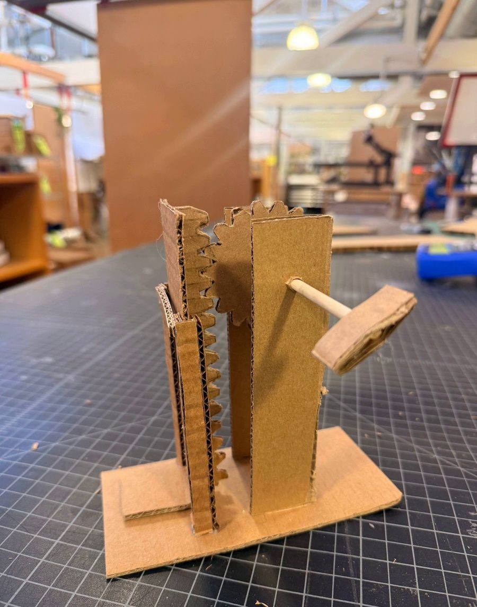
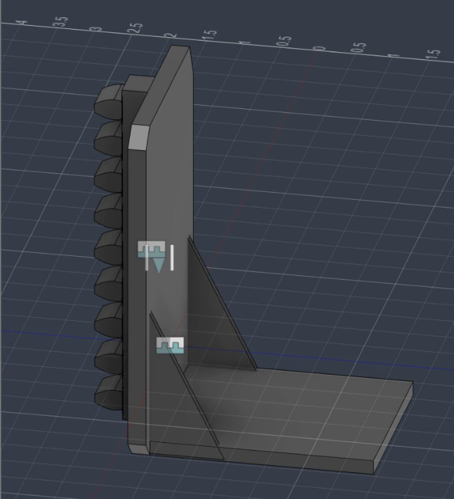
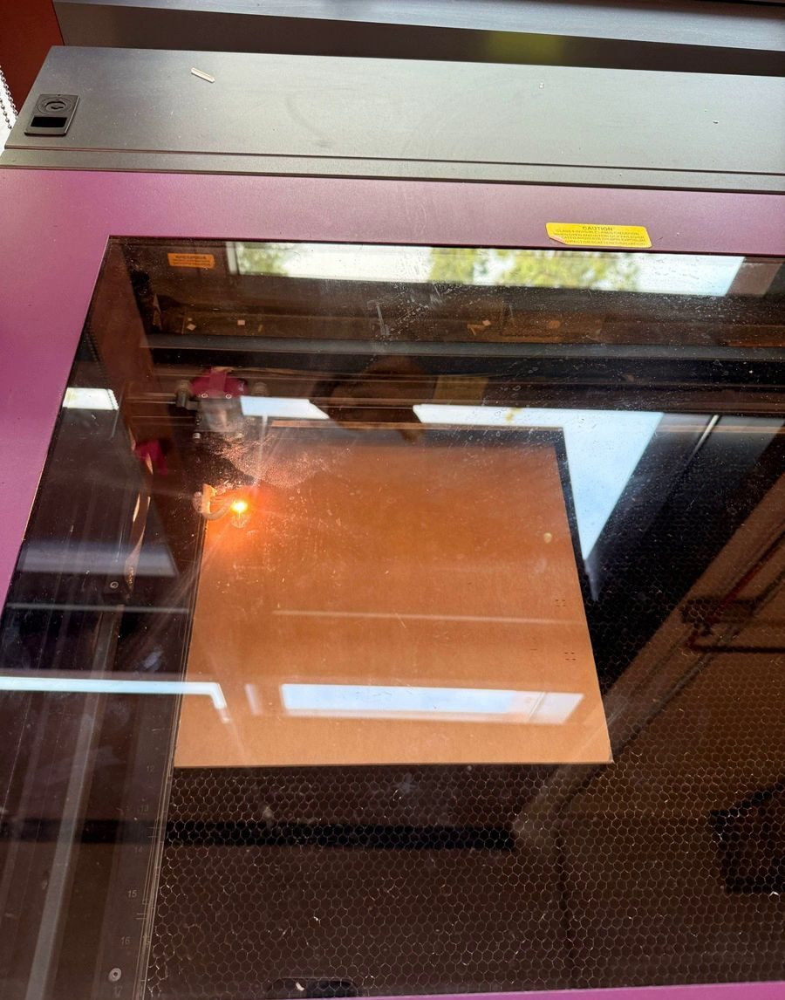
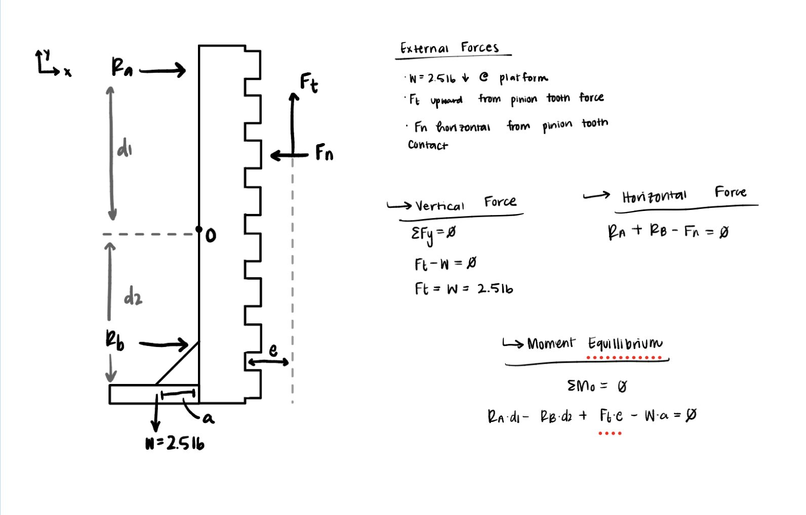

A compact rack-and-pinion lift that raises a load with a single turn of the crank.

We designed a rack-and-pinion lift that turns a hand crank into vertical motion, raising a 2.5 lb load 6 inches inside a tight envelope.
Check the motion and proportions before CAD.
Lock in gear spacing, shafts and gussets.
Laser-cut and printed parts, test after test.
Free body diagram to check every load.
Design a compact rack-and-pinion mechanism that turns a hand crank into vertical lift: raise a 2.5 lb load at least 6 inches while staying inside the project envelope.
How might we build something that does exactly what it needs to, clearly and reliably, without unnecessary complexity?
The rack is the main weight-bearing member. It directly supports the platform, and meshing pinion gears drive it upward. The force path is easy to follow, the motion is direct, and the structure stays guided, stable and easy to assemble.
- Lift 2.5 lb
- At least 6 in of travel
- Fit the project envelope
- Smooth, guided motion
Cardboard first to check the motion, then CAD to lock in the gear spacing, then a lot of test prints until everything slid smoothly.





A quick model with a toothed rack, a gear and a dowel crank to test motion and proportions before CAD.



Dimensioned the side panel in Fusion 360, laid out the gear train and shaft spacing, and modeled the rack and platform with gussets for support.


Tested the gear-mount plate, guide block and side panels for clearance, alignment and smooth vertical motion.
One turn of the crank lifts the load. A rack-and-pinion gear train converts rotation into straight vertical motion, and the rack carries the platform directly, so there is one clear load path from handle to weight.
Pinion gears on steel shafts held in line across the side panels.
A guide structure keeps the rack from wobbling or binding as it rises.

Free body diagram of the rack holding the platform. Vertical: Ft = W = 2.5 lb, so the pinion carries the whole load. Horizontal: RA + RB = Fn, so the guides take all the sideways tooth force. Moments about O: RA·d1 − RB·d2 + Ft·e − W·a = 0; Ft and W are offset from the rack, and the guide reactions keep it straight.
PLA for the slider and platform: geometry only printing could make, with adjustable infill for stiffness where needed. Steel hex nuts and screws for fastening under unexpected impacts. Acrylic for gears and panels: firmer than plywood and well below its yield point at this scale.
- Lifted the 2.5 lb design load through the full 6 in
- Compact and quiet, with nothing extra
- Tighten rack and gear alignment
- Refine tolerances to cut friction and play
- Strengthen key load areas
- Improve the guide structure
A simple mechanism still takes a lot of precision. Alignment, tolerances and guidance mattered as much as the concept itself. Good engineering is mostly about removing what you do not need.
Minerva is curious about almost everything, and patient enough to learn it.